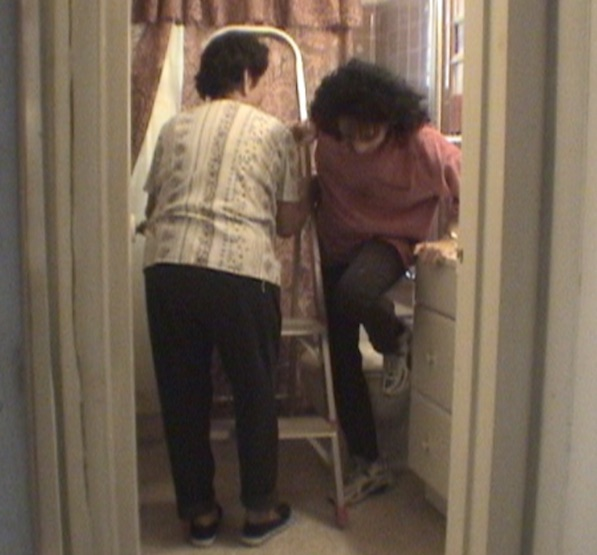
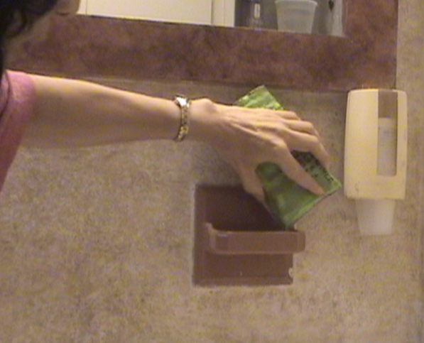

When it comes to choosing the faux finish painting that is right for your walls, there are a few important things to keep in mind.
They should be thought out clearly before you start faux painting in order to avoid major complications or problems that might delay or completely derail a work in progress. If you are reading this article, you've probably been searching the web to find the most affordable and easiest way to do it yourself. I have been a professional faux painter for 10 years now and after literally faux finishing hundreds of walls, I think I can save you saying oh no! a few times. There are a lot of different methods. The easiest faux painting technique probably being sponging. But before you decide to start any project or buy any faux painting tools, take time to consider the following thoughts.
Before you choose what faux finishing technique you want to faux paint your wall with, ask yourself the following questions:
1) Is the finish going to look too busy or patchy overall? Remember that when you are looking at a small sample, it is different than looking at it over large areas. That's why you should always practice on a large poster board first. You might want to paint a couple of boards and place them on the wall and then stand back to get the full effect before you proceed to faux paint the wall. Make sure if you are going with a patterned type of faux finish that it does not clash with the decor in your room. Sometimes it's best to go with a simple color washing faux finish that incorporates all the main colors in the room and blends nicely in the background.
2) How high are your ceilings? If the faux painting technique you are going to use requires using a roller or brushing on more than one color, you should use a scaffold instead of dangerously carrying up multiple trays up a ladder. However, if you can't fit a scaffold in the area, then you will have no choice, therefore, get your climbing shoes on because you will go up and down that ladder a lot of times.
3) If the faux painting method you are going to use requires using two persons, make sure that both of you will be able to fit in the working area, especially if you have to fit a ladder in there, too. 😂

4) In choosing your faux finish and the faux painting tools you are going to use, keep in mind that in small sections or tight areas, the tools might not fit. Therefore, it's best to keep those patterned faux finishes to walls that don't have too many fixtures on them.

You don't want to spend a lot of money on faux painting tools and precious time learning a faux finishing technique, only to find out that you will not be able to achieve the finish on your walls due to insufficiently taking time to consider these important questions first.
Through the years, I have eliminated offering certain faux finishes to clients depending upon these critical factors. I hope and pray that this article has made you think about some key questions that can save you a ton of heartache and frustration in planning your first or next faux painting project.
Because I understand how difficult it is to properly execute the necessary steps that certain faux painting methods or systems use, I have through the grace of God, developed a faux painting system that I believe addresses all the problems that one can encounter on most jobs.

Our BASIC KIT INCLUDES Multi Color Faux Palette, 2 Poofy Pads, 2 Tuck and Gather tools and our Faux Painting Workshop DVD. It's now on sale for only $39.99 for a limited time. With the Basic faux painting kit, you will learn 10 faux finishing techniques like Old World Parchment, Color Washing, Faux Brick, Stone, Ragging, Sponging and even how to paint Clouds on ceilings!

You will also receive, FREE of charge, a Faux Painting Color Suggestions and Idea E-book-book. It will help you when it comes to choosing your faux painting colors.


(This kit includes Basic, Faux Marble, Faux Wood Kit and tools for texturing)
*FREE Priority Shipping and Color Idea E-book